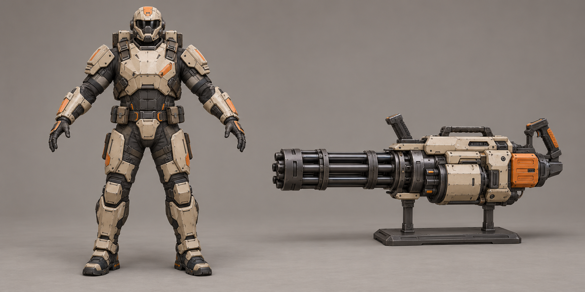
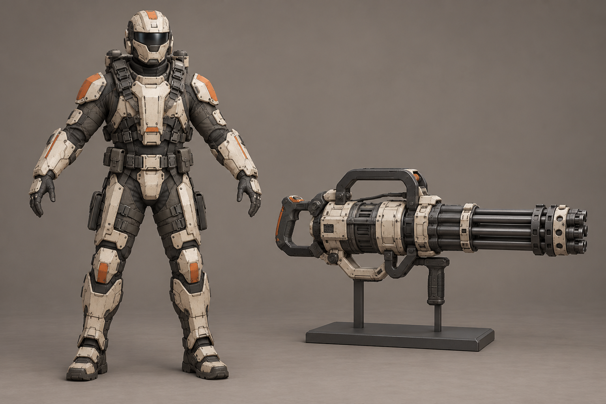
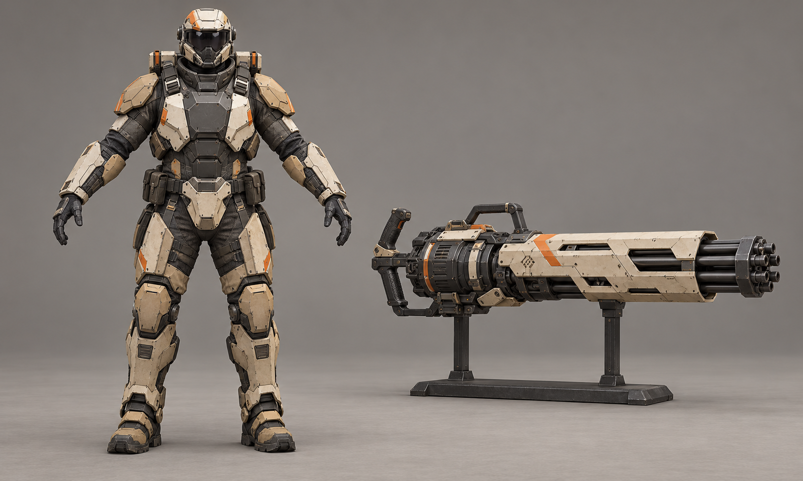
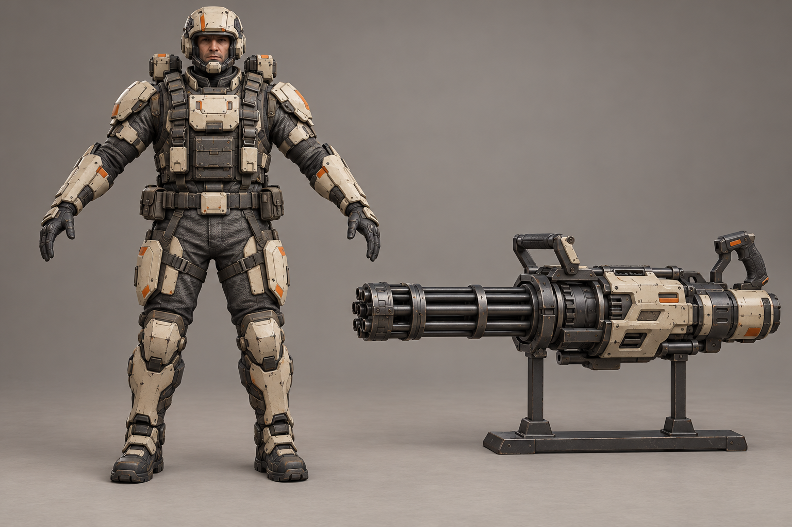
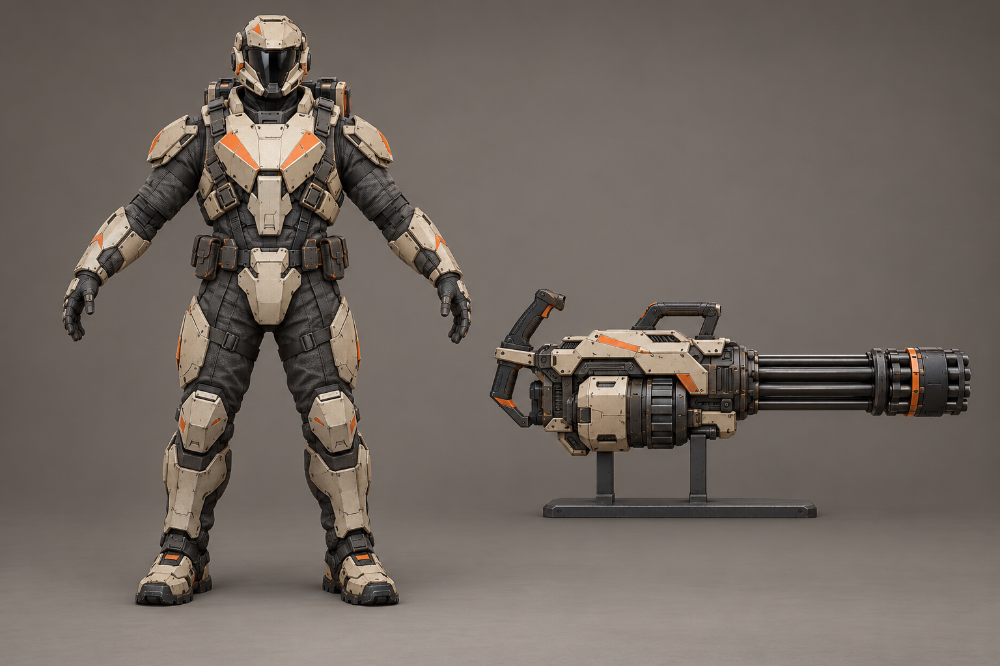
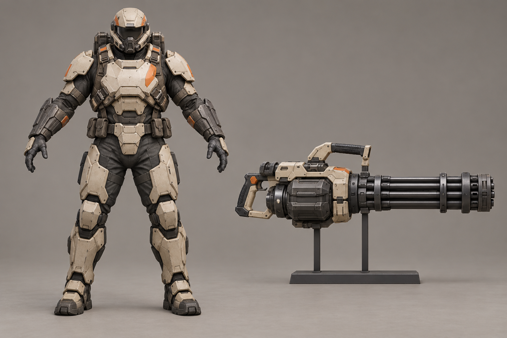
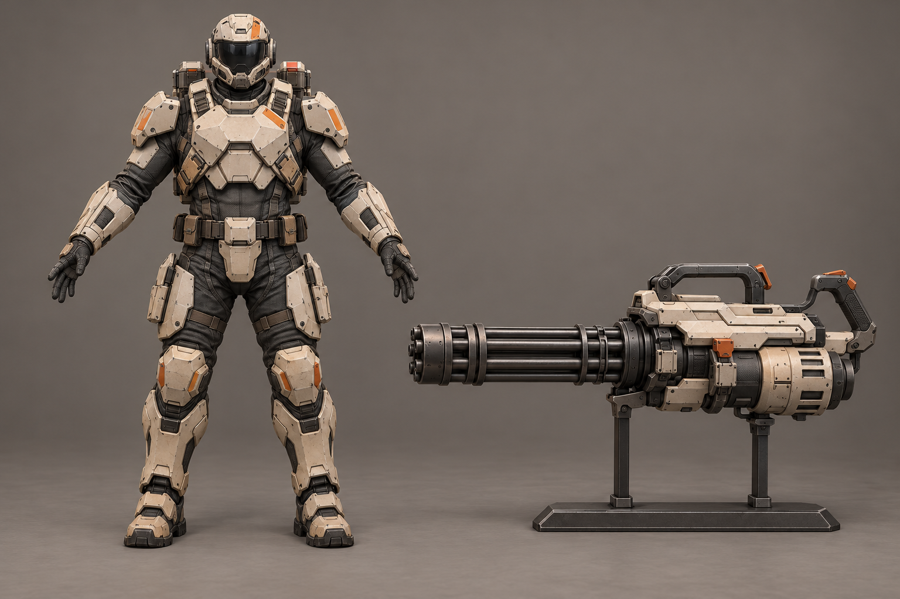
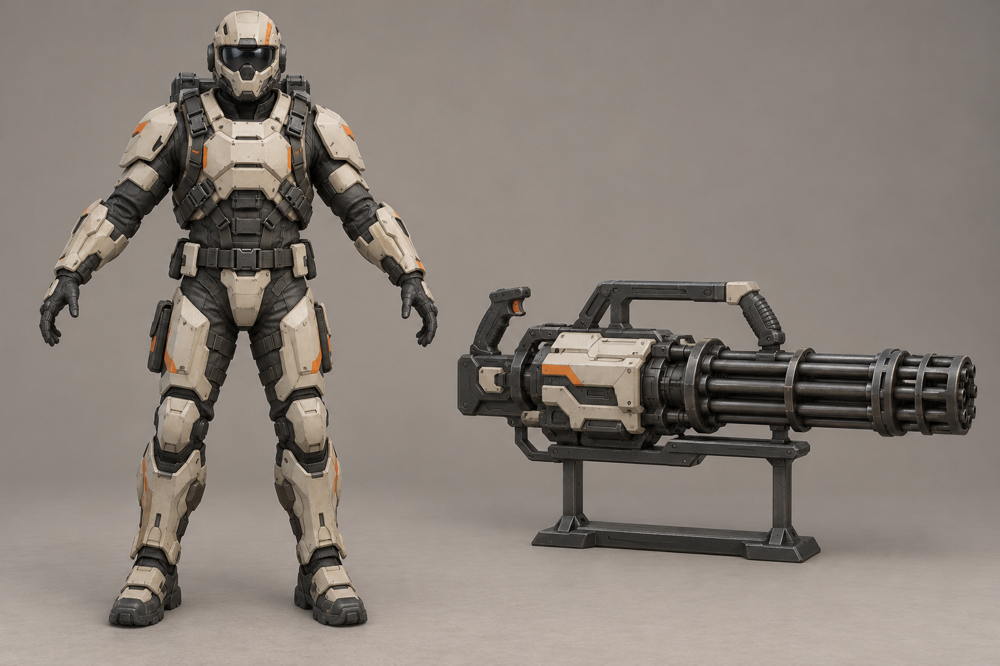

A «Блок»Широкая цельная нагрудная плита и компактный закрытый корпус минигана.Открыть крупно · Промпт
B «Скоба»Открытая силовая рама у плеч и миниган с выраженной нижней рукоятью.Открыть крупно · Промпт
C «Кожух»Тёмный корпус брони со светлыми вставками и длинный гранёный кожух оружия.Открыть крупно · Промпт
D «Разгрузка»Больше ткани и снаряжения, меньше сплошной брони; короткий миниган.Открыть крупно · Промпт
E «Клин»Клиновидная грудная броня и вытянутый миниган с низким силуэтом.Открыть крупно · Промпт
F «Мотор»Акцент на графитовых предплечьях и открытом внешнем приводе оружия.Открыть крупно · Промпт
G «Панцирь»Сегментированная броня корпуса и защищённый миниган со светлой оболочкой.Открыть крупно · Промпт
H «Рама»Открытые промежутки между бронеплитами и крупная прямоугольная рама минигана.Открыть крупно · Промпт